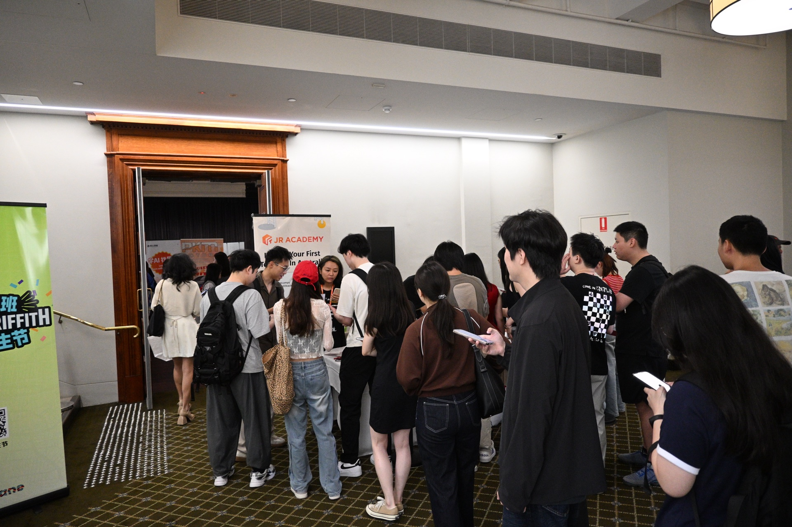
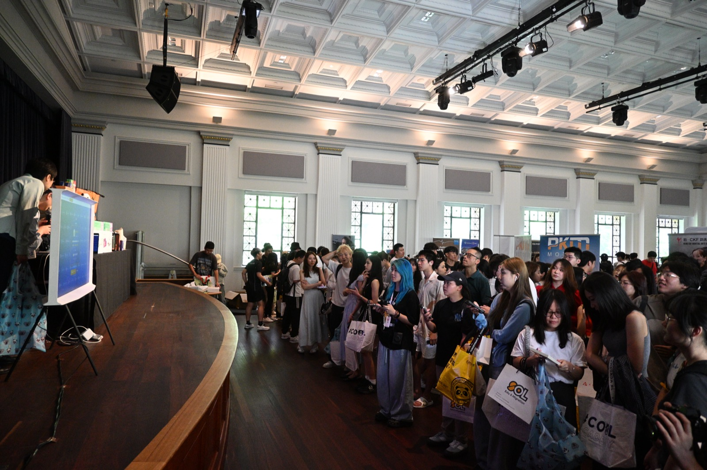
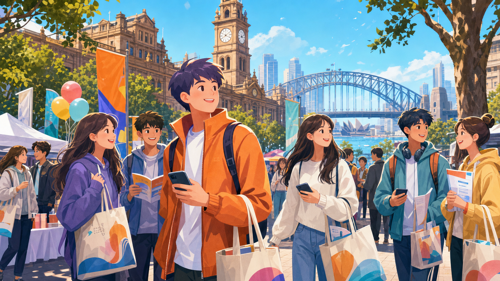
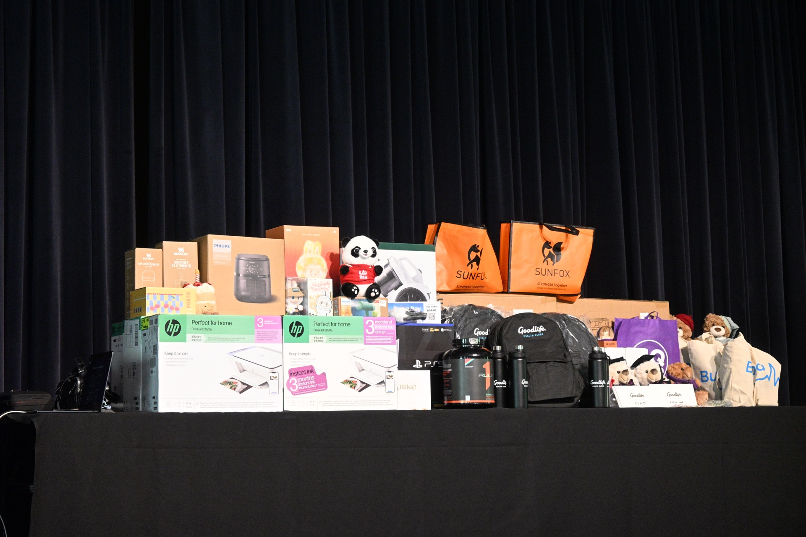
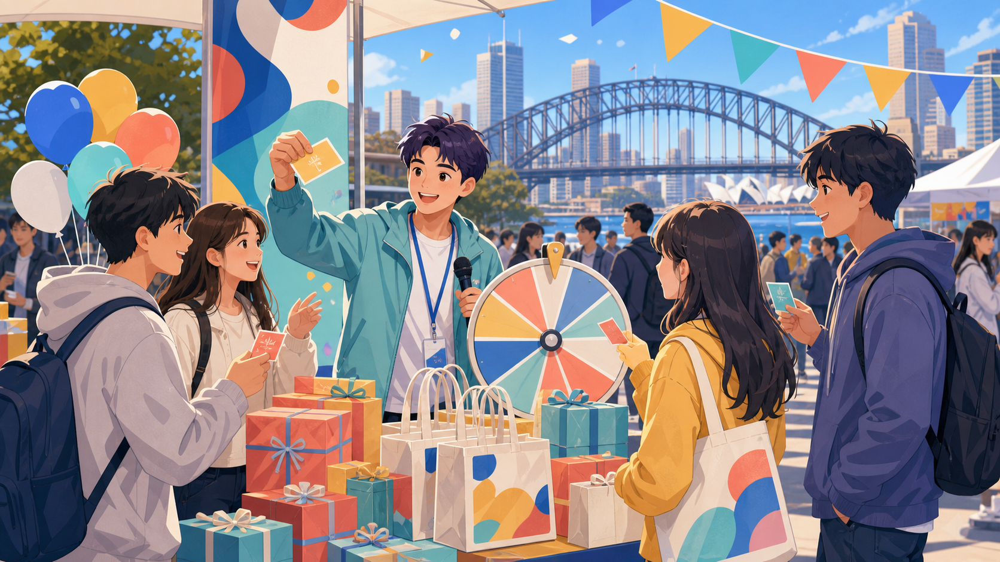
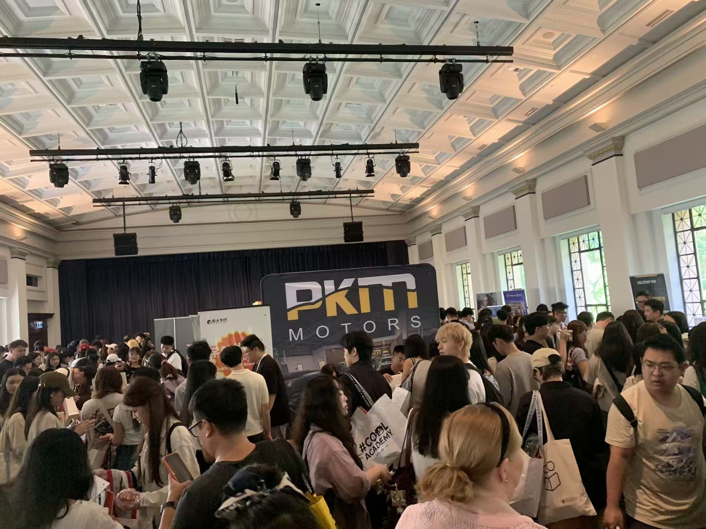
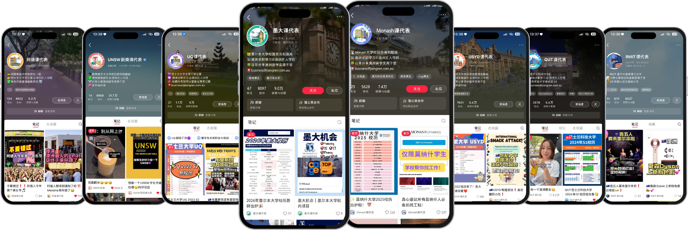

USYD · UNSW · UTS · Macquarie
Fri. Aug. 28th, 2026 · 2:00 – 5:00 PM
Lower Town Hall, Sydney Town Hall, 483 George St, Sydney NSW 2000

USYD、UNSW、UTS、Macquarie 新生集中到场，活动目标覆盖约 80% 悉尼大学生消费群体。
自 2017 年起运营高校内容与线下活动，覆盖悉尼、墨尔本、布里斯班、阿德莱德 4 地区 8 校。
活动前通过公众号、小红书、大学群、朋友圈和线下宣传集中预热；活动中由工作人员引导扫码、领礼品和参与展位互动。

匠人学院举办「2026 S2 悉尼四校新生节」，聚焦 USYD、UNSW、UTS、Macquarie 四校新生，预计吸引超千名学生到场。
活动把市中心室内展区、四校新生流量、课代表系列学生私域和现场展位互动放在同一个招商场景里，让品牌在开学季第一时间建立认知、完成互动并沉淀后续转化线索。
帮助新生融入校园生活和城市环境，提供实用信息和礼品。
为商家提供展示品牌和产品的机会，增强在年轻人群体中的品牌认知度。
搭建新生与商家之间的桥梁，通过互动活动和礼品派发，增加品牌亲和力。

现场可领取各种免费礼品，增加活动吸引力。
设置多种有趣互动，提升新生参与度和现场氛围。
提供悉尼生活和学习的实用信息，帮助新生尽快适应新环境。
面对面互动，直接触达大学新生，提升品牌曝光率。
利用活动平台宣传品牌，增强在年轻消费群体中的知名度。
获取新生联系信息，为后续市场推广和销售活动奠定基础。
14 个自媒体账号，覆盖 10 万+粉丝 + 2 万+私域学生；合作套餐含至少 3 次前期宣传。
USYD / UNSW / UTS / Macquarie，区别于单一大学 O-week 摊位。
合作门槛低至 $1500，面对面接触 1000+ 新生，精准流量转私域。
工作人员协助沟通、市中心室内场地、无校方限制、现场即时获取学生反馈。
Lower Town Hall
悉尼市中心地标 Sydney Town Hall 楼下大厅 · 483 George St · 舒适优雅室内展区
基础展位 + Gift Packs
多渠道预热 + 品牌介绍
优先资源 + 回顾曝光
高曝光权益 + 现场优先位
Early Bird · 早鸟 10% off
摊位费约 $2,500/天，还要自带地推、物料和现场拦截；通常只覆盖一所学校。
$3,220 / day学生集中到场，工作人员协助动线，品牌把精力放在福利、二维码、咨询和后续私域。
from $1,100
入场拿基础券
带同学加券
扫码集章
发帖/截图审核
回到舞台开奖
提供校园资源、学习方法、生活建议，帮助新生更快融入大学生活。
提供相互认识、交流、建立友谊的平台，增强归属感。
邀请学长及顾问就学业、职业及移民规划提供建议与指导。
通过展位 + 互动环节向新生介绍各类资源；与多家教育机构达成合作意向。

「领到超多免费礼品，还参与了抽奖，学长学姐耐心解答让我对大学生活充满信心！」 —— USYD 新生 Jarrica
「活动组织得很好，互动游戏有趣，还赢得了奖品！」 —— UNSW 新生 Ivan
「结识了很多新朋友，特别喜欢答疑环节。」 —— UTS 新生 Lucy
内容反馈：讲座丰富实用，互动有趣且有教育意义，学长学姐答疑广受好评。
组织反馈：签到与引导高效，志愿者团队热情专业。
「看到同学们开心参与、领取礼品，我觉得一切辛苦都值得。每次抽奖的欢呼让我感受到活动的成功。」 —— Benny
「帮助新生解答疑问，看到他们安心快乐我也很开心。这次活动让我认识了很多新朋友，也体验到团队合作的力量。」 —— Dora
课代表系列覆盖澳洲四城八校，持续输出大学生活、教育资讯和本地活动内容。对商家来说，它不是一条广告位，而是一组能触达学生日常的内容入口。

用真实账号矩阵展示粉丝、收藏、曝光和学校覆盖，不再只靠文字说明品牌能力。
课代表公众号覆盖悉尼、墨尔本、布里斯班、阿德莱德等核心高校，适合做活动预热、品牌介绍和回顾传播。
| 公众号 | 粉丝 | 平均曝光 |
|---|---|---|
| USYD 课代表（悉尼大学） | 6200+ | 700+ |
| UNSW 课代表（新南威尔士大学） | 5878+ | 500+ |
| UQ 课代表（昆士兰大学） | 14000+ | 2000+ |
| 墨大课代表（墨尔本大学） | 8200+ | 800+ |
| Monash 课代表（莫纳什大学） | 2900+ | 200+ |
| 阿德课代表（阿德莱德大学） | 3200+ | 200+ |
基于「课代表」系列的高校内容矩阵、线下活动经验和学生私域，本届悉尼场可以在开学季集中覆盖四校新生。合作不只停留在线上曝光，还能通过展位互动、主持人口播、群内沉淀与活动后数据反馈，把现场注意力转成可继续跟进的线索。
每年 2 月与 7 月与各高校官方合作，新生周提供展位：摊位 Banner/海报、校园分发传单、发优惠券、礼物发放、扫码加学生/建新生群。
单所大学单日人流量超 1w+
迎新周是建立学生早期品牌好感度的绝佳时期；通过与各高校大学社团合作，借社团特色活动精准触达目标学生群体，借助校园内部网络增强品牌市场存在感。
发放礼物/优惠券 · 赞助商视频展示 · 内容互动问答 · 发言环节 · 加微信 · 指定平台/APP 下载注册。
主题活动 · 场地布置 · 物料礼品设计 · 活动冠名 · 现场展位 · Banner · 传单。
我们为您和您的品牌提供定制化需求
Phone +61 452263727
WeChat jiangren_jobs
Email angela727hl@gmail.com
展位、权益、物料和现场执行可按品牌需求确认。
请优先联系 JR Academy 对接人。